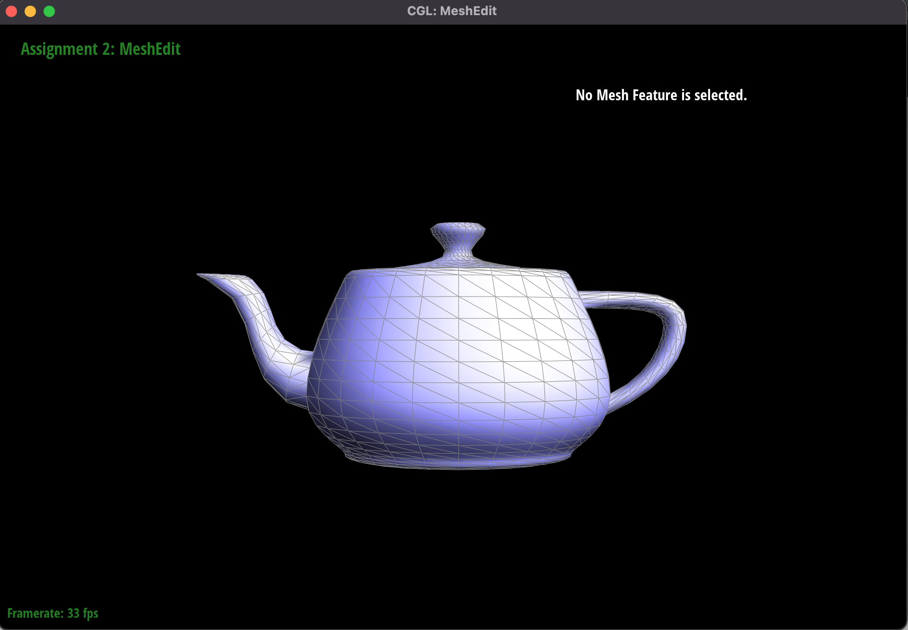
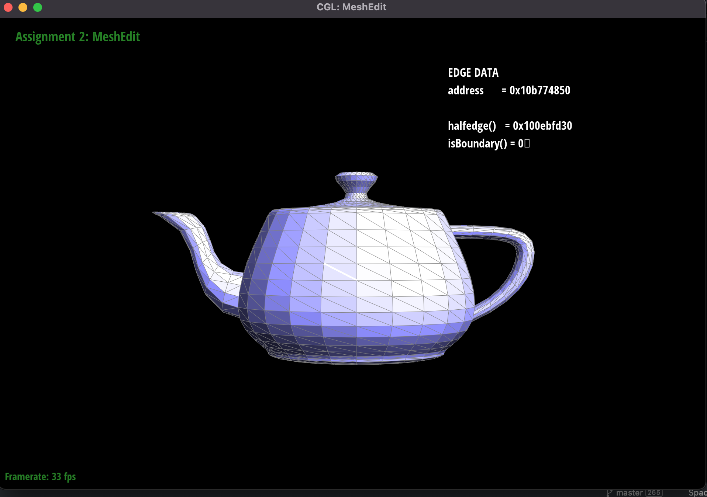
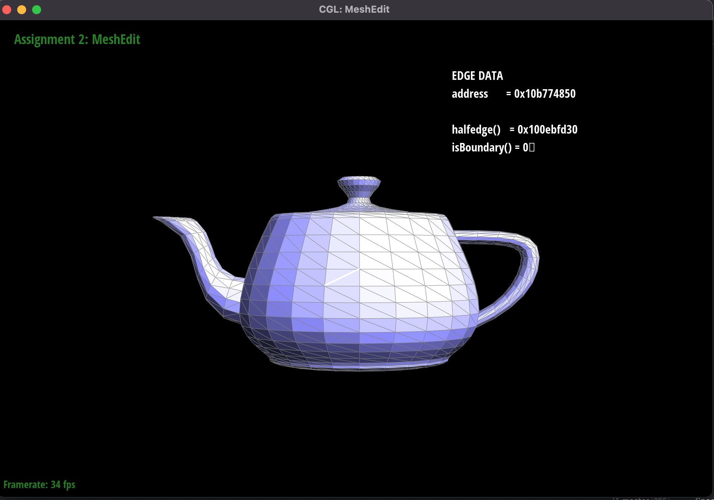
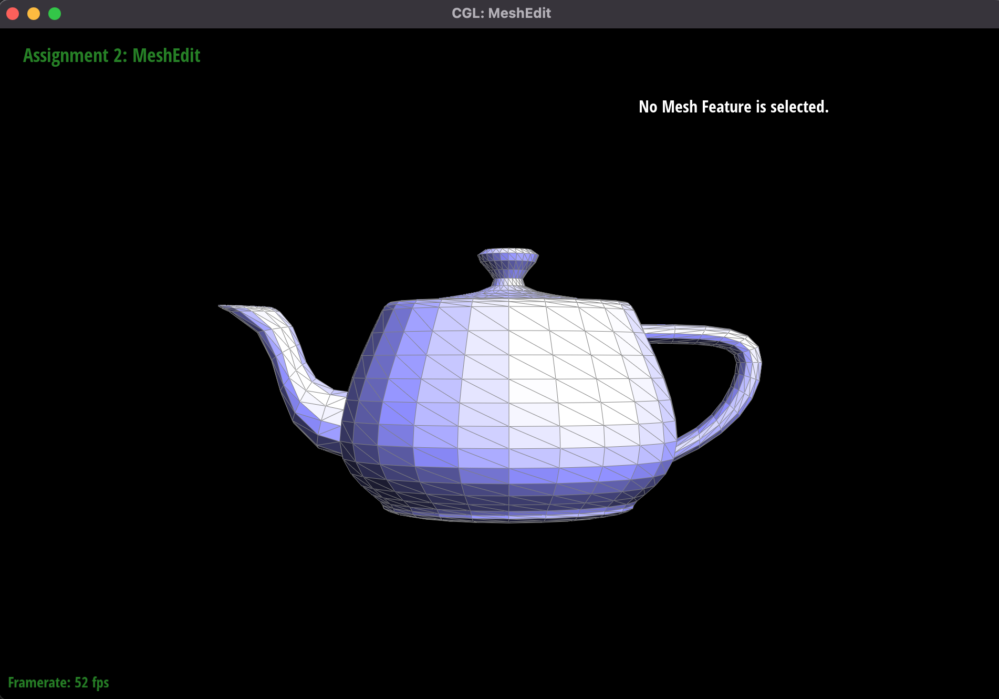
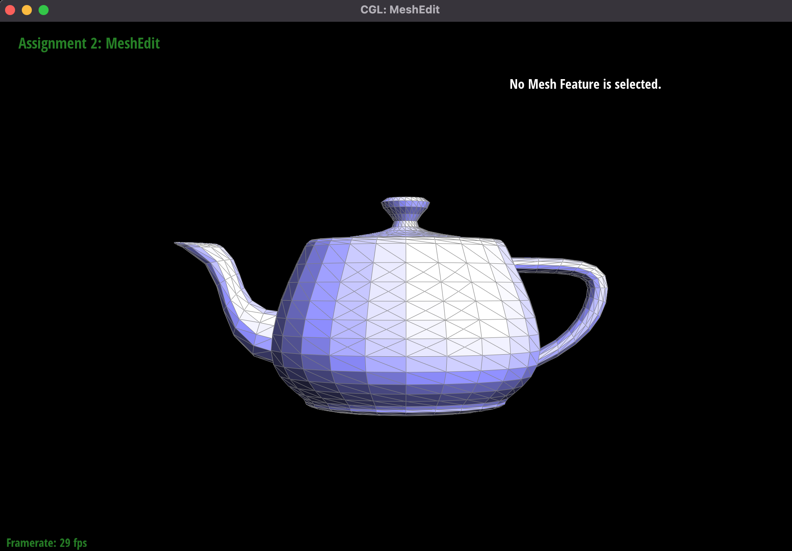
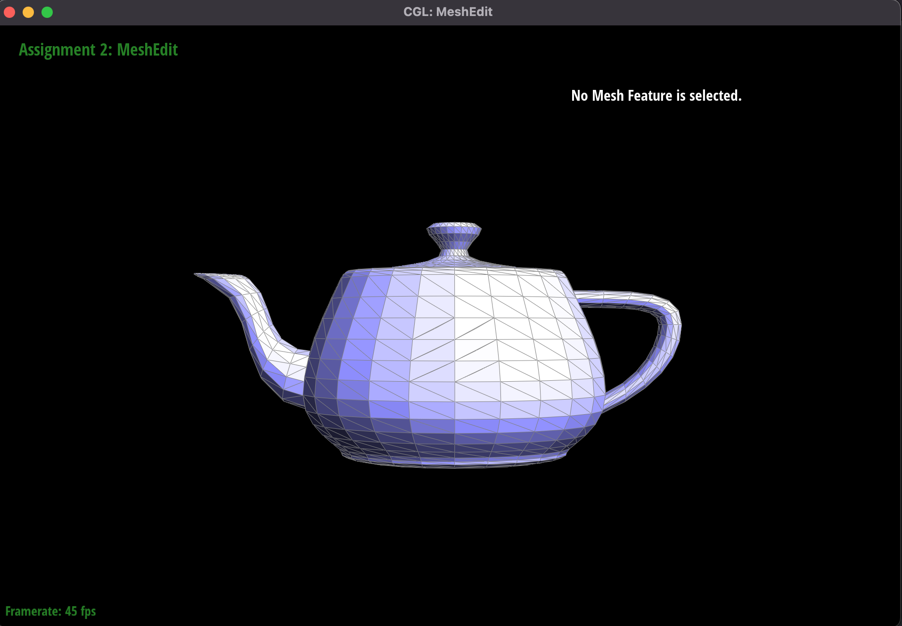

Overview
Give a high-level overview of what you implemented in this project. Think about what you've built as a whole. Share your thoughts on what interesting things you've learned from completing the project.
Section I: Bezier Curves and Surfaces
Part 1: Bezier curves with 1D de Casteljau subdivision
Briefly explain de Casteljau's algorithm and how you implemented it in order to evaluate Bezier curves.
De Casteljau's algorithm involves interpolating a point between some point p_i and p_{i+1} for i=0...(k-1) when we have k control points. This algorithm is run recursivley until only one point remains and that point will be a point on the Bezier curve with the initial k control points. This was implemented through a series of helper functions such as evaluateStep() which would simply evaluate one step of the recursive de Casteljau's algorithm and evaluate1D() which would evaluate the Bezier curve at some point t given k control points.
Take a look at the provided .bzc files and create your own Bezier curve with 6 control points of your choosing. Use this Bezier curve for your screenshots below.
See figure 1.
Show screenshots of each step / level of the evaluation from the original control points down to the final evaluated point. Press E to step through. Toggle C to show the completed Bezier curve as well.
See figure 2-7.
Show a screenshot of a slightly different Bezier curve by moving the original control points around and modifying the parameter tt via mouse scrolling.
See figure 8.
|
|

|
|
|
|
|
|

|
|
|
|
Part 2: Bezier surfaces with separable 1D de Casteljau subdivision
Briefly explain how de Casteljau algorithm extends to Bezier surfaces and how you implemented it in order to evaluate Bezier surfaces.
De Casteljau's algorithm extends very well/easily to Bezier surfaces by simply performing 1d de casteljau's algorithm to each row of a bezier curve's rows in the control matrix.
Show a screenshot of bez/teapot.bez (not .dae) evaluated by your implementation
See figure 9.
Section II: Sampling
Part 3: Average normals for half-edge meshes
Briefly explain how you implemented the area-weighted vertex normals.
We implemented the area-weighted vertex nomals by iterating through the given faces and then using the formula from lecture to find the normals.
Show screenshots of dae/teapot.dae (not .bez) comparing teapot shading with and without vertex normals. Use Q to toggle default flat shading and Phong shading.
See figures 10 and 11.
|
|

|
Part 4: Half-edge flip
Briefly explain how you implemented the edge flip operation and describe any interesting implementation / debugging tricks you have used.
We implemented the edge flip operation by iterating through the mesh very carefully and reassigning pointers very meticulously. We didn't really use any unique debugging tricks. We just used print statements whenever the program would crash to detect what line it was crashing at.
Show screenshots of the teapot before and after some edge flips.
See figure 12-13.
Write about your eventful debugging journey, if you have experienced one.
We experienced no debugging journey 😎
|

|

|
Part 5: Half-edge split
Briefly explain how you implemented the edge split operation and describe any interesting implementation / debugging tricks you have used.
We implemented the edge split operation by carefully iterating through the mesh and re-arranging pointers to allow for our new 2 edges to replace our previous singular edge. We didn't use any special debugging tricks other than printf-ing everytime our program crashed.
Show screenshots of a mesh before and after some edge splits.
See figures 14-15.
Show screenshots of a mesh before and after a combination of both edge splits and edge flips.
See figure 16.
Write about your eventful debugging journey, if you have experienced one.
We didn't have much of an eventful debugging journey.
If you have implemented support for boundary edges, show screenshots of your implementation properly handling split operations on boundary edges.
We did not implement split operations on the boundary edges.
|

|

|
|

|
Part 6: Loop subdivision for mesh upsampling
Briefly explain how you implemented the loop subdivision and describe any interesting implementation / debugging tricks you have used.
ENTER
Take some notes, as well as some screenshots, of your observations on how meshes behave after loop subdivision. What happens to sharp corners and edges? Can you reduce this effect by pre-splitting some edges?
ENTER
Load dae/cube.dae. Perform several iterations of loop subdivision on the cube. Notice that the cube becomes slightly asymmetric after repeated subdivisions. Can you pre-process the cube with edge flips and splits so that the cube subdivides symmetrically? Document these effects and explain why they occur. Also explain how your pre-processing helps alleviate the effects.
ENTER
If you have implemented any extra credit extensions, explain what you did and document how they work with screenshots.
We did not implement any extra credit extensions.
Section III: Optional Extra Credit
If you are not participating in the optional mesh competition, don't worry about this section!